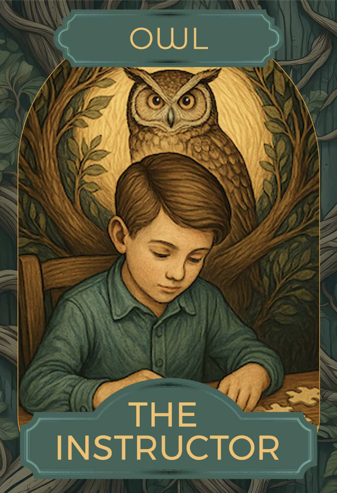
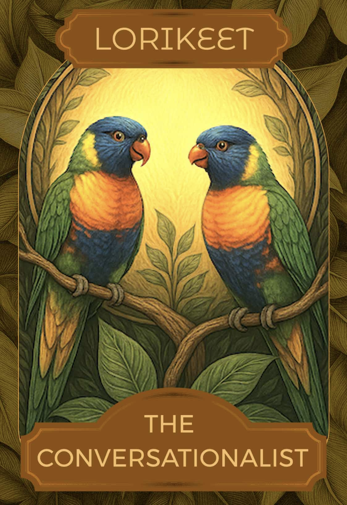
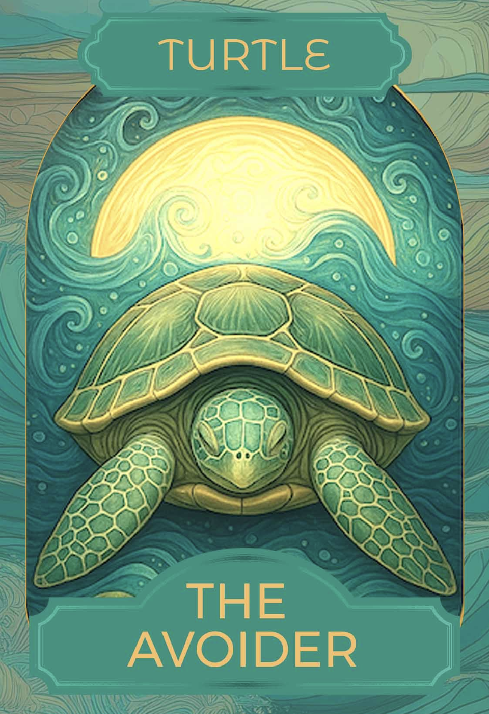
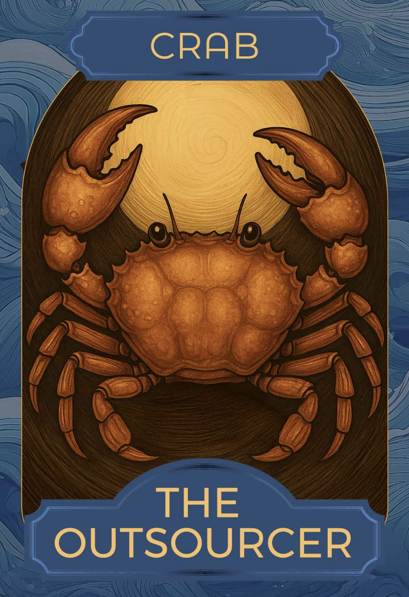

I’ve done the activity, what next?
Individually dive deeper with Feedback Animals.
 Take a moment to reflect on these additional questions to gain deeper insights on different feedback scenarios:
Take a moment to reflect on these additional questions to gain deeper insights on different feedback scenarios:
- What is your default Feedback Animal when you are under pressure? Is it different to your preferred style? Why or why not?
- What Feedback Animal would you like to be a little more like? How is it different to your current usual style?
- What situations or scenarios might best suit giving feedback like the owl/lorikeet/meerkat/lioness?
- Are there other Feedback Animal cards that you relate to? Which is your secondary archetype for giving feedback?
- Which feedback animals have you experienced as a receiver? Which have you not experienced?
- Think of feedback you’ve struggled to understand in the past. Which Feedback Animal seems to match how it was delivered?
- If you wanted to invent a new card which fitted you perfectly, what would it be?
Have a conversation with your coach or mentor, sharing your feedback animals. Ask about theirs.
 Learn more about effective feedback techniques. There are many great resources including;
Thanks for the Feedback,
Situation, Behaviour & Impact,
Building a Healthy Feedback Culture,
Crucial Conversations
Learn more about effective feedback techniques. There are many great resources including;
Thanks for the Feedback,
Situation, Behaviour & Impact,
Building a Healthy Feedback Culture,
Crucial Conversations
 Introduce this activity 1:1 with people you routinely give feedback to. Especially valuable where it is a new feedback relationship. A good way to start is to share your preferred ways to give and receive feedback. Include the invitation to receive feedback, especially on areas that you want to grow stronger at. Good feedback isn’t hierarchical, it’s a two-way exchange. Remember to introduce the purpose of the activity; to learn more about each other’s feedback approaches to ensure effective feedback conversations, always delivered with good intentions.
Introduce this activity 1:1 with people you routinely give feedback to. Especially valuable where it is a new feedback relationship. A good way to start is to share your preferred ways to give and receive feedback. Include the invitation to receive feedback, especially on areas that you want to grow stronger at. Good feedback isn’t hierarchical, it’s a two-way exchange. Remember to introduce the purpose of the activity; to learn more about each other’s feedback approaches to ensure effective feedback conversations, always delivered with good intentions.
How can I use this with my team?
 The Feedback Animals activity can be a useful tool to kick-off, or reinforce a positive feedback culture in your team. Opportunities where you could use it to start a team conversation include:
The Feedback Animals activity can be a useful tool to kick-off, or reinforce a positive feedback culture in your team. Opportunities where you could use it to start a team conversation include:
- I’m setting up a new team and I want us to get off to a great start, trust each other and thrive.
- New team members have joined my team and we need to do a quick re-set so that no one is left out and there’s good trust and connection.
- My team is drowning; team members are feeling overwhelmed or in tension and it’s affecting how we work.
Activities to try, include:
Introduce the Feedback Animals activity with your team. Great for new teams to help them form, or share the activity as part of a team building workshop.
- Allow 5-10 mins for each team member to individually complete the activity on their laptops. Take individual screenshots to capture the results.
- Take it in turns to share insights, starting with yourself/team leader. Explain when you respond best to receiving feedback.
- Discuss as a group what does this mean for the way we give & receive feedback day to day in our roles?
- Variation on above - include a ‘blank’ card template.
- Is there a different feedback animal that best describes you at work?
- Complete a card template with its name, characteristics, pros & cons?
- Share and explain it to the team.
- Understand the different Feedback Animal archetypes better.
- Assign different Feedback Animal cards to team members (not the ones that are their preferred archetypes)
- Ask them to role play giving & receiving feedback as that archetype. It can be helpful to have a simple feedback scenario prepared for the team eg: Give feedback to a team member on a small training session they ran that had good content, but lacked hands-on practice.
- Discuss: What did you learn? What do you notice?
- Schedule a Feedback Habits team workshop with Unfold Labs
- Incorporate Feedback Animal cards into your existing learning programs eg Leadership, team skills, onboarding.
Uicons by Flaticon
What does feedback sound like from different Feedback Animals?
Scenario: Missed deadline
Context:
Maria usually pulls together the team summary for the monthly leadership catch-up. Last time, it was late — she’d been waiting on data but didn’t flag it. As a result, the team looked a bit disorganised in front of leadership.
Your Role:
You work alongside Maria. Give her feedback that acknowledges she’s normally solid, explains how the delay affected things, and encourages her to speak up sooner next time.
| Feedback Animal | What it might sound like | |
|---|---|---|
|  |
Owl
The Instructor
|
Maria, for next time — if you think something might run late, it helps to say so a day or two out. What I usually do is: check what I need early, send a quick note if there’s a hold-up, and have a fallback if it drags out. It just avoids the last-minute scramble. |
|  |
Lorikeet
The Conversationalist
|
(over a slice of cake) Hey, I was thinking about the summary last month — I didn’t realise you were stuck waiting on data. What do you reckon might work better next time, if something’s out of our hands like that? |
 |
Meerkat
The Harmoniser
|
I figured something was up with the summary last month. You usually have it so polished. I know sometimes there are delays — totally get it. I suppose, if you ever think it might not land on time, even a tiny heads-up — sorry, just a little note — could help the rest of us adjust things a bit, maybe. But honestly, I know you’ve got a lot on. |
 |
Lioness
The Challenger
|
Maria, I’m saying this because I rate you. The late summary made us look messy, and that’s not you. Just call it out next time — even if it’s someone else’s delay. You’ve got good instincts, use ’em. |
|  |
Turtle
The Avoider
|
(Internal monologue weeks later) She probably knows the summary was late. It’s not really my place to bring it up. I just hope it doesn’t happen again... |
|  |
Crab
The Sidestepper
|
I didn’t bring it up with her, but that late summary didn’t look great. Maybe someone like Jess, who’s closer to her day-to-day, could gently mention it? She’d take it better from her. |
 |
Penguin
The Unfiltered
|
The summary was late again. Brilliant. No warning, nothing. And somehow it’s someone else’s fault. I had to wait ten minutes for my sandwich last Tuesday. I hate that. Why is no one ever just... on time anymore? |